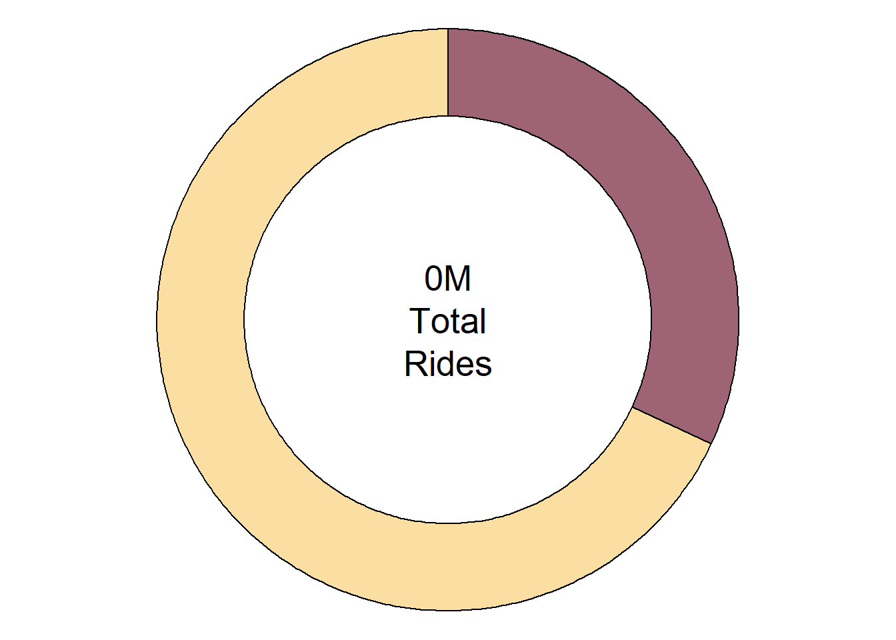
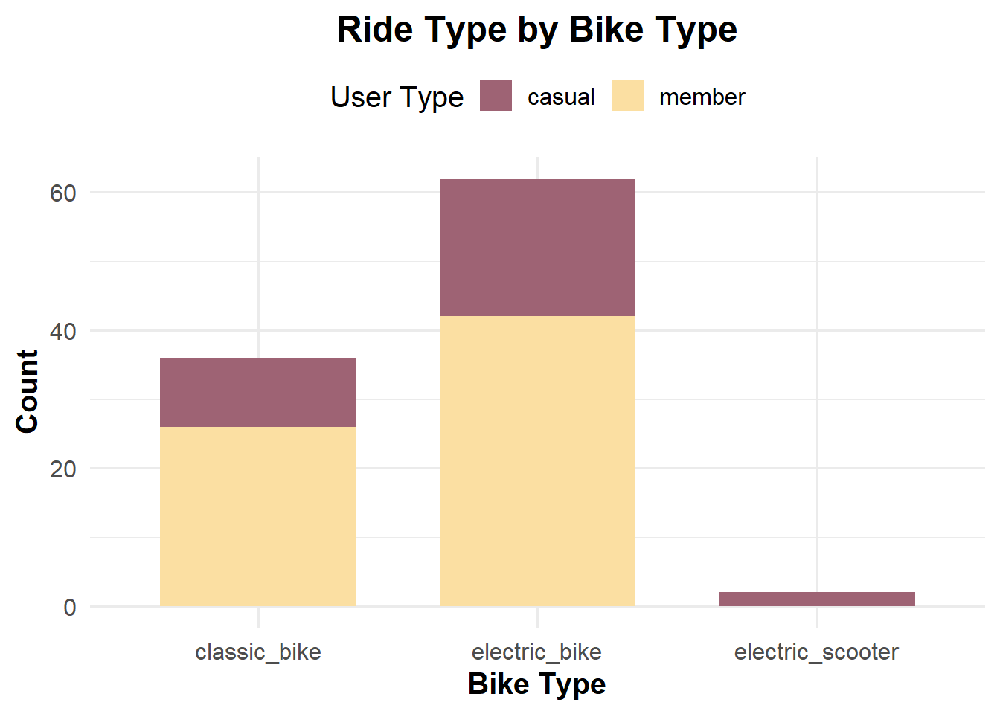
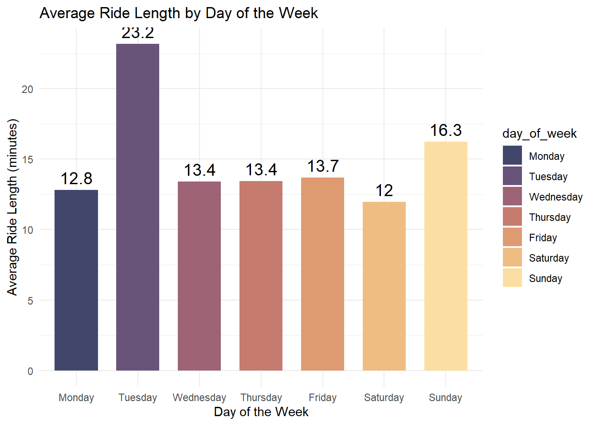
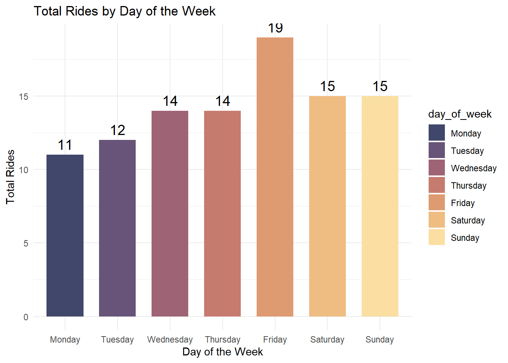
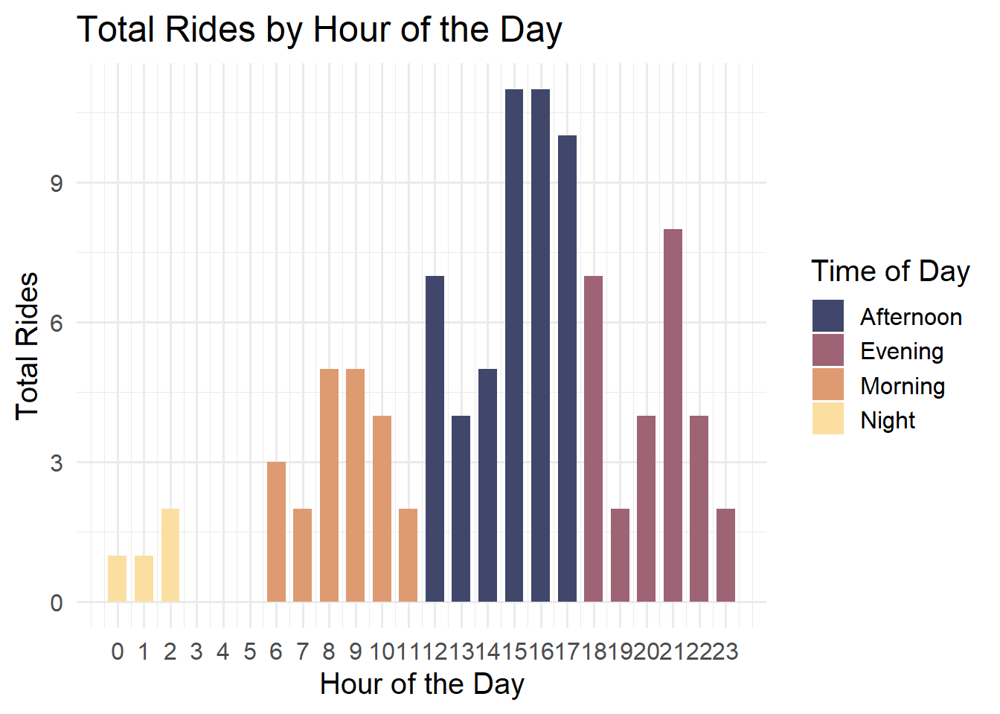
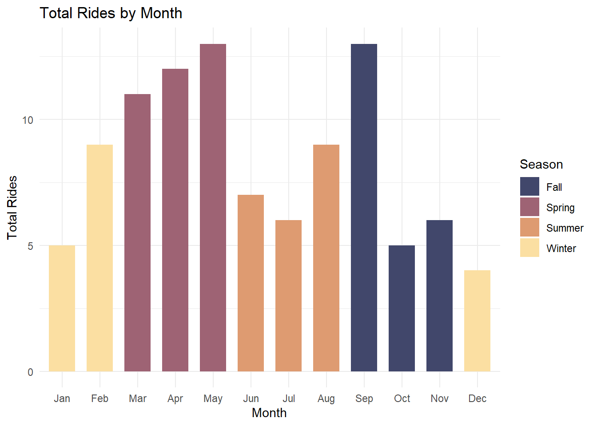
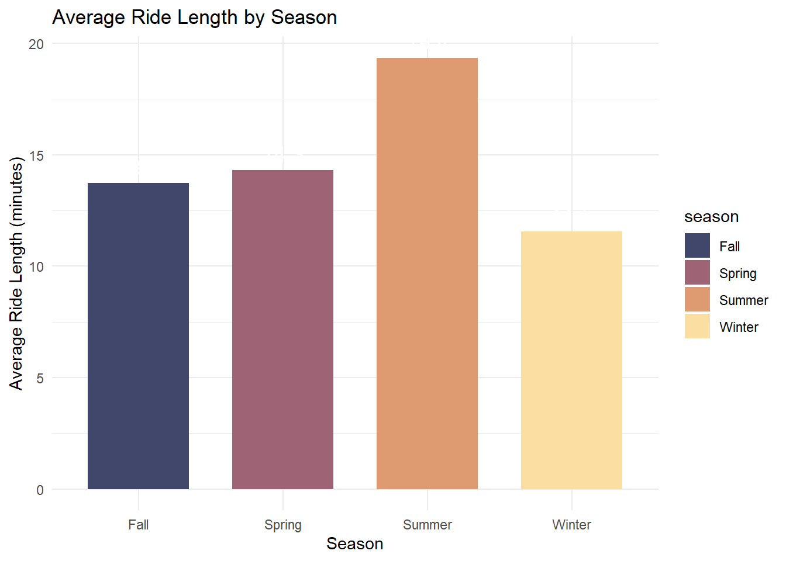

A PBS is an extension of the existing transit system with a network of short-term, self-service bicycle posts in which:
Users can use bikes by purchasing casual day use or annual memberships,
Users can ride bikes for a short distance for one-way trips within a defined service area and Station locations can change overtime based on ridership practices or operation needs.
Bike share technology continues to evolve quickly along with other wireless and digital changes. Other recent advancements include systems that do not require docking stations i.e. “smart lock” systems and electric‐assist bikes.
About this dataset
I used 1 year (12 Months) of Divvy Chicago Bike Sharing Data from Jan 2024 to Dec 2024, obtained from Divy Bike .
This dataset included 5,667,986 trips, of which 3,127,293 / 55.2% were made by annual or monthly members, and 2,540,693 / 44.8% by casual users.
Missing features
Although this dataset is not a result of a survey, The following missing features could make this analysis more interesting and stronger if were exist.
Bike ID,
User ID,
User Gender,
User Age,
Purpose of trip,
Trip distance and
Weather conditions.
I believe some of them are connected to the agreed privacy policy!
Anyway, let’s load the packages we need for this brief analysis
We are setting up our system by loading the necessary libraries. These libraries will enable us to perform data manipulation, visualization, and interactive chart creation. ## Reading Data In this section, we are reading the Divvy bike data for all months of 2024. Each dataset represents trips taken in a specific month. The data is stored in CSV files located in the datasets folder.
Combining the datasets
Here, we combine all monthly datasets into a single dataset for easier analysis. Additionally, a month column is added to each dataset to identify the month of each ride.
Sample Dataset
To make our analysis more efficient and focus on a manageable subset of data, we sample 100 records from the combined dataset.
Combining Data
To enhance our analysis, we derive new columns: - Hour: Extracts the hour from the start time. - Time of Day: Categorizes hours into time periods (Night, Morning, Afternoon, Evening). - Season: Categorizes months into seasons (Winter, Spring, Summer, Fall).
Remove Data
We clean up our workspace by removing the individual monthly datasets, which are no longer needed after combining.
Ride type by user
This section analyzes ride types based on user type (member vs. casual). The data is grouped and visualized in a pie chart to show the proportion of rides for each user type.

Ride Type By Rideable
In this section, we examine ride type based on bike types (classic, electric, docked) and user categories. The data is visualized as a stacked bar chart to highlight usage trends.

Ride Length by Weekday

Total Rides By Weekday

Total Rides by Hour
Scale for fill is already present.
Adding another scale for fill, which will replace the existing scale.

Total Rides by Month
Scale for fill is already present.
Adding another scale for fill, which will replace the existing scale.


Source Code
---title: "Divvy Bike Analysis"format: html: theme: litera code-fold: true code-summary: "Show Code" code-overflow: wrap code-tools: true code-copy: true highlight-style: github code-link: true---## IntroductionPublic bike share (PBS).A PBS is an extension of the existing transit system with a network ofshort-term, self-service bicycle posts in which:- Users can use bikes by purchasing casual day use or annual memberships,- Users can ride bikes for a short distance for one-way trips within a defined service area and Station locations can change overtime based on ridership practices or operation needs.Bike share technology continues to evolve quickly along with otherwireless and digital changes. Other recent advancements include systemsthat do not require docking stations i.e. "smart lock" systems andelectric‐assist bikes.### About this datasetI used 1 year (12 Months) of Divvy Chicago Bike Sharing Data from Jan2024 to Dec 2024, obtained from Divy Bike .This dataset included 5,667,986 trips, of which 3,127,293 / 55.2% weremade by annual or monthly members, and 2,540,693 / 44.8% by casualusers.#### Missing featuresAlthough this dataset is not a result of a survey, The following missingfeatures could make this analysis more interesting and stronger if wereexist.- Bike ID,- User ID,- User Gender,- User Age,- Purpose of trip,- Trip distance and- Weather conditions.I believe some of them are connected to the agreed privacy policy!Anyway, let's load the packages we need for this brief analysis```{r , class.source="Fragment Mono", results='hide', warning=FALSE, message=FALSE}#| code-fold: true#| code-summary: "Show the code"#| fold: trueknitr::opts_chunk$set(echo = FALSE)library(tidyverse)library(ggplot2)library(dplyr)library(plotly)library(ggplot2)library(paletteer)library(PNWColors) scale_colour_paletteer_d("PNWColors::Sunset")scale_fill_paletteer_d("PNWColors::Sunset")theme_set(theme_minimal())```We are setting up our system by loading the necessary libraries. These libraries will enable us to perform data manipulation, visualization, and interactive chart creation.## Reading DataIn this section, we are reading the Divvy bike data for all months of 2024. Each dataset represents trips taken in a specific month. The data is stored in CSV files located in the `datasets` folder.```{r , class.source="Fragment Mono", results='hide', warning=FALSE, message=FALSE}#| code-fold: true#| code-summary: "Show the code"#| fold: truejanuary <- read.csv("datasets/202401-divvy-tripdata.csv")february <- read.csv("datasets/202402-divvy-tripdata.csv")march <- read.csv("datasets/202403-divvy-tripdata.csv")april <- read.csv("datasets/202404-divvy-tripdata.csv")may <- read.csv("datasets/202405-divvy-tripdata.csv")june <- read.csv("datasets/202406-divvy-tripdata.csv")july <- read.csv("datasets/202407-divvy-tripdata.csv")august <- read.csv("datasets/202408-divvy-tripdata.csv")september <- read.csv("datasets/202409-divvy-tripdata.csv")october <- read.csv("datasets/202410-divvy-tripdata.csv")november <- read.csv("datasets/202411-divvy-tripdata.csv")december <- read.csv("datasets/202412-divvy-tripdata.csv")```## Combining the datasetsHere, we combine all monthly datasets into a single dataset for easier analysis. Additionally, a `month` column is added to each dataset to identify the month of each ride.```{r , class.source="Fragment Mono", results='hide', warning=FALSE, message=FALSE}#| code-fold: true#| code-summary: "Show the code"#| fold: trueall_data <- bind_rows( january |> mutate(month = 1), february |> mutate(month = 2), march |> mutate(month = 3), april |> mutate(month = 4), may |> mutate(month = 5), june |> mutate(month = 6), july |> mutate(month = 7), august |> mutate(month = 8), september |> mutate(month = 9), october |> mutate(month = 10), november |> mutate(month = 11), december |> mutate(month = 12))```## Sample DatasetTo make our analysis more efficient and focus on a manageable subset of data, we sample 100 records from the combined dataset.```{r, class.source="Fragment Mono", results='hide', warning=FALSE, message=FALSE}#| code-fold: true#| code-summary: "Show the code"#| fold: trueall_data <- all_data |> sample_n(100)```## Combining DataTo enhance our analysis, we derive new columns:- **Hour**: Extracts the hour from the start time.- **Time of Day**: Categorizes hours into time periods (Night, Morning, Afternoon, Evening).- **Season**: Categorizes months into seasons (Winter, Spring, Summer, Fall).```{r , class.source="Fragment Mono", results='hide', warning=FALSE, message=FALSE}#| code-fold: true#| code-summary: "Show the code"#| fold: trueall_data <- all_data |> mutate(hour = hour(started_at)) |> mutate(time_of_day = case_when ( hour %in% 0:5 ~ "Night", hour %in% 6:11 ~ "Morning", hour %in% 12:17 ~ "Afternoon", hour %in% 18:23 ~ "Evening" ))all_data <- all_data |> mutate(season = case_when ( month %in% c(12, 1, 2) ~ "Winter", month %in% c(3, 4, 5) ~ "Spring", month %in% c(6, 7, 8) ~ "Summer", month %in% c(9, 10, 11) ~ "Fall" ))sample_data <- all_data |> sample_n(100)```## Remove DataWe clean up our workspace by removing the individual monthly datasets, which are no longer needed after combining.```{r , class.source="Fragment Mono", results='hide', warning=FALSE, message=FALSE}#| code-fold: true#| code-summary: "Show the code"#| fold: truerm(january, february, march, april, may, june, july, august, september, october, november, december)```## Ride type by userThis section analyzes ride types based on user type (member vs. casual). The data is grouped and visualized in a pie chart to show the proportion of rides for each user type.```{r}#| code-fold: true#| code-summary: "Show the code"#| fold: trueride_type_by_user <- sample_data |>group_by(member_casual) |>summarise(count =n()) |>mutate(proportion = count /sum(count),percentage = count /sum(count) *100, )ride_type_by_user |>mutate(start =lag(proportion, default =0) *2* pi,end =cumsum(proportion) *2* pi, ) |>ggplot() + ggforce::geom_arc_bar(aes(x0 =0, y0 =0,r0 =0.7, r =1,start = start, end = end,fill = member_casual ) ) +annotate('text', x =0,y =0,label =paste0(round(nrow(sample_data) /1000000, 2), "M\nTotal\nRides"),size =7,lineheight =1 ) +coord_equal(expand =FALSE, xlim =c(-1.1, 1.1), ylim =c(-1.1, 1.1)) +theme_void(base_size =16) +labs(fill =element_blank() ) +theme(legend.position ="none",legend.margin =margin(t =1, b =0.5, unit ='cm'), ) +scale_fill_manual(values =pnw_palette("Sunset", n =2))```## Ride Type By RideableIn this section, we examine ride type based on bike types (classic, electric, docked) and user categories. The data is visualized as a stacked bar chart to highlight usage trends.```{r}#| code-fold: true#| code-summary: "Show the code"#| fold: trueride_type_by_rideable <- sample_data |>group_by(rideable_type, member_casual) |>summarise(count =n(), .groups ='drop')ggplot(ride_type_by_rideable, aes(x = rideable_type, y = count, fill = member_casual)) +geom_bar(stat ="identity", position ="stack", width =0.7) +labs(title ="Ride Type by Bike Type",x ="Bike Type",y ="Count",fill ="User Type" ) +theme_minimal(base_size =15) +theme(plot.title =element_text(hjust =0.5, face ="bold"),axis.title.x =element_text(face ="bold"),axis.title.y =element_text(face ="bold"),legend.position ="top" ) +scale_fill_manual(values =pnw_palette("Sunset", n =2))``````{r}## Average Ride Length#| code-fold: true#| code-summary: "Show the code"average_ride_length <- sample_data |>mutate(ride_length =as.numeric(difftime(ended_at, started_at, units ="mins"))) |>group_by(member_casual) |>summarise(average_ride_length =mean(ride_length, na.rm =TRUE))ggplot(average_ride_length, aes(x = member_casual, y = average_ride_length, fill = member_casual)) +geom_bar(stat ="identity", width =0.7) +geom_text(aes(label =round(average_ride_length, 1)), vjust =-0.5, size =5) +labs(title ="Average Ride Length by User Type",x ="User Type",y ="Average Ride Length (minutes)" ) +scale_fill_manual(values =pnw_palette("Sunset", n =2))```## Ride Length by Weekday```{r, height = 400, width = 800}#| code-fold: true#| code-summary: "Show the code"ride_length_by_weekday <- sample_data |> mutate(ride_length = as.numeric(difftime(ended_at, started_at, units = "mins")), day_of_week = weekdays(as.Date(started_at))) |> group_by(day_of_week) |> summarise(average_ride_length = mean(ride_length, na.rm = TRUE)) |> mutate(day_of_week = fct_relevel(day_of_week, c("Monday", "Tuesday", "Wednesday", "Thursday", "Friday", "Saturday", "Sunday")))ggplot(ride_length_by_weekday, aes(x = day_of_week, y = average_ride_length, fill = day_of_week)) + geom_bar(stat = "identity", width = 0.7) + geom_text(aes(label = round(average_ride_length, 1)), vjust = -0.5, size = 5) + labs( title = "Average Ride Length by Day of the Week", x = "Day of the Week", y = "Average Ride Length (minutes)" ) + scale_fill_manual(values = pnw_palette("Sunset", n = 7))```## Total Rides By Weekday```{r}total_rides_by_weekday <- sample_data |>mutate(day_of_week =weekdays(as.Date(started_at))) |>group_by(day_of_week) |>summarise(total_rides =n()) |>mutate(day_of_week =fct_relevel(day_of_week, c("Monday", "Tuesday", "Wednesday", "Thursday", "Friday", "Saturday", "Sunday")))total_rides_by_weekday |>ggplot(aes(x = day_of_week, y = total_rides, fill = day_of_week)) +geom_bar(stat ="identity", width =0.7) +geom_text(aes(label = total_rides), vjust =-0.5, size =5) +labs(title ="Total Rides by Day of the Week",x ="Day of the Week",y ="Total Rides" ) +scale_fill_manual(values =pnw_palette("Sunset", n =7))```## Total Rides by Hour```{r}total_rides_by_hour <- sample_data |>mutate(hour =hour(started_at)) |>group_by(hour, time_of_day) |>summarise(total_rides =n(), .groups ='drop')total_rides_by_hour |>ggplot(aes(x = hour, y = total_rides, fill = time_of_day)) +geom_bar(stat ="identity", width =0.7) +scale_x_continuous(breaks =0:23) +scale_fill_brewer(palette ="Set1") +labs(title ="Total Rides by Hour of the Day",x ="Hour of the Day",y ="Total Rides",fill ="Time of Day" ) +theme_minimal(base_size =15) +scale_fill_manual(values =pnw_palette("Sunset", n =4))```## Total Rides by Month```{r}total_rides_by_month <- sample_data |>mutate(month =month(started_at, label =TRUE)) |>group_by(month, season) |>summarise(total_rides =n(), .groups ='drop')total_rides_by_month |>ggplot(aes(x = month, y = total_rides, fill = season)) +geom_bar(stat ="identity", width =0.7) +scale_fill_brewer(palette ="Set1") +labs(title ="Total Rides by Month",x ="Month",y ="Total Rides",fill ="Season" ) +scale_fill_manual(values =pnw_palette("Sunset", n =4))``````{r}average_ride_length_by_season <- sample_data |>mutate(ride_length =as.numeric(difftime(ended_at, started_at, units ="mins"))) |>group_by(season) |>summarise(average_ride_length =mean(ride_length, na.rm =TRUE), .groups ='drop')ggplot(average_ride_length_by_season, aes(x = season, y = average_ride_length, fill = season)) +geom_bar(stat ="identity", width =0.7) +geom_text(aes(label =round(average_ride_length, 1)), vjust =-0.5, size =5, color ="white") +labs(title ="Average Ride Length by Season",x ="Season",y ="Average Ride Length (minutes)" ) +scale_fill_manual(values =pnw_palette("Sunset", n =4))```